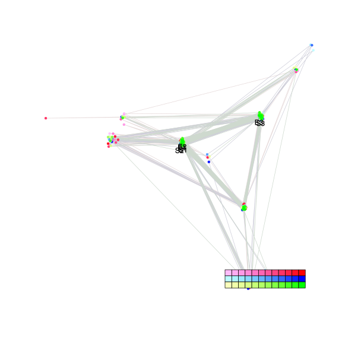
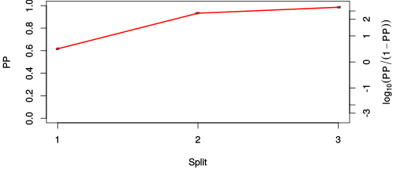
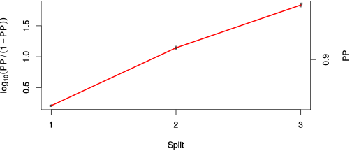

| chain # | burnin | subsample | Iterations (remaining) | command line | subdirectory | directory |
|---|---|---|---|---|---|---|
| 1 | 10000 | 1 | 90000 | /home/willemse/software/bali-phy-3.0-beta2/bin/bali-phy cat_E6_E7_AA_red3_v2_Alpha_v1_sorted.fas -s 67269 -n Alpha_c1 | Alpha_c1-1 | /home/willemse/data/trees/BAli-Phy |
| 2 | 10000 | 1 | 90000 | /home/willemse/software/bali-phy-3.0-beta2/bin/bali-phy cat_E6_E7_AA_red3_v2_Alpha_v1_sorted.fas -s 43922 -n Alpha_c2 | Alpha_c2-1 | /home/willemse/data/trees/BAli-Phy |
| 3 | 10000 | 1 | 90000 | /home/willemse/software/bali-phy-3.0-beta2/bin/bali-phy cat_E6_E7_AA_red3_v2_Alpha_v1_sorted.fas -s 45131 -n Alpha_c3 | Alpha_c3-1 | /home/willemse/data/trees/BAli-Phy |
| P(data|M) = -2958.760 +- 0.129 | Complete sample: 40 topologies | 95% Bayesian credible interval: 6 topologies |
Phylogeny Distribution

| Partition support: Summary |
| Partition support graph: SVG |
{kind=link}
| 50% consensus | Newick (+PP) | SVG | |||||
| 66% consensus | Newick (+PP) | SVG | |||||
| 80% consensus | Newick (+PP) | SVG | |||||
| 90% consensus | Newick (+PP) | SVG | |||||
| 95% consensus | Newick (+PP) | SVG | |||||
| 99% consensus | Newick (+PP) | SVG | |||||
| 100% consensus | Newick (+PP) | SVG | |||||
| MAP | Newick (+PP) | SVG | |||||
| greedy | Newick (+PP) | SVG |
{kind=link}
{kind=link}
{kind=link}
{kind=link}
{kind=link}
{kind=link}
{kind=link}
{kind=link}
Alignment Distribution
Partition 1
| Diff | Min. %identity | # Sites | Constant | Informative | ||||
|---|---|---|---|---|---|---|---|---|
| Initial | FASTA | HTML | Diff | 1.28% | 269 | 1 (0.372%) | 103 (38.3%) | |
| Best (WPD) | FASTA | HTML | AU | 18.5% | 296 | 21 (7.09%) | 127 (42.9%) |
Mixing
{kind=link}
{kind=link}
| burnin (scalar) | ESS (scalar) | ESS (partition) | ASDSF | MSDSF | PSRF-CI80% | PSRF-RCF |
|---|---|---|---|---|---|---|
| 948 | 6070 | 14587.635 | 0.002 | 0.005 | 1.001 | 1.01 |
Projection of RF distances for the first 3 chains3D | Variation of split PPs across chains |
Scalar variables
| Statistic | Median | 95% BCI | ACT | ESS | burnin | PSRF-CI80% | PSRF-RCF |
|---|---|---|---|---|---|---|---|
| prior | -190.3 | (-222.1, -163.1) | 37.89 | 7125 | 882 | 0.9998 | 1.001 |
| prior_A1 | -168.9 | (-198.4, -142.9) | 8.349 | 32341 | 240 | 1 | 1.003 |
| likelihood | -2943 | (-2960, -2927) | 7.872 | 34297 | 279 | 1 | 1.003 |
| logp | -3133 | (-3161, -3110) | 44.48 | 6069 | 948 | 0.9995 | 0.9991 |
| Heat.beta | 1 | ||||||
| Scale1 | 3.145 | (1.314, 6.129) | 1 | 270003 | 58 | 1 | 1.001 |
| S1.F.pi.A | 0.05259 | (0.03779, 0.06808) | 8.097 | 33346 | 196 | 0.9994 | 1.002 |
| S1.F.pi.R | 0.06948 | (0.05268, 0.08782) | 8.3 | 32529 | 494 | 1 | 0.9999 |
| S1.F.pi.N | 0.03298 | (0.02234, 0.04478) | 7.629 | 35393 | 480 | 0.9998 | 1.002 |
| S1.F.pi.D | 0.06123 | (0.04501, 0.07879) | 8.157 | 33099 | 661 | 0.9998 | 1.001 |
| S1.F.pi.C | 0.05503 | (0.03788, 0.0746) | 8.095 | 33355 | 360 | 1 | 0.9989 |
| S1.F.pi.Q | 0.04663 | (0.03423, 0.05984) | 7.932 | 34041 | 202 | 1 | 1 |
| S1.F.pi.E | 0.06998 | (0.05354, 0.08759) | 7.998 | 33760 | 505 | 1 | 1.001 |
| S1.F.pi.G | 0.05814 | (0.04016, 0.0772) | 8.134 | 33192 | 335 | 0.9998 | 0.9989 |
| S1.F.pi.H | 0.0353 | (0.02343, 0.04821) | 7.679 | 35161 | 223 | 1 | 0.999 |
| S1.F.pi.I | 0.0446 | (0.03187, 0.05894) | 8.429 | 32032 | 482 | 0.9998 | 0.9934 |
| S1.F.pi.L | 0.1142 | (0.09093, 0.1378) | 7.907 | 34145 | 354 | 0.9997 | 0.9987 |
| S1.F.pi.K | 0.03902 | (0.02685, 0.0523) | 8.392 | 32173 | 377 | 1.001 | 0.995 |
| S1.F.pi.M | 0.01023 | (0.004742, 0.01681) | 8.047 | 33555 | 416 | 1 | 1.01 |
| S1.F.pi.F | 0.03221 | (0.02048, 0.04528) | 8.242 | 32757 | 300 | 0.9997 | 0.9937 |
| S1.F.pi.P | 0.04413 | (0.02913, 0.06056) | 9.153 | 29498 | 255 | 1 | 1.001 |
| S1.F.pi.S | 0.04969 | (0.03644, 0.06423) | 8.055 | 33519 | 291 | 1 | 0.9966 |
| S1.F.pi.T | 0.057 | (0.04231, 0.07289) | 8.075 | 33436 | 443 | 0.9998 | 0.9954 |
| S1.F.pi.W | 0.02081 | (0.01097, 0.03239) | 8.28 | 32607 | 288 | 1 | 0.9985 |
| S1.F.pi.Y | 0.04319 | (0.02936, 0.05895) | 7.969 | 33882 | 575 | 1 | 1.004 |
| S1.F.pi.V | 0.05626 | (0.0419, 0.07213) | 8.372 | 32252 | 315 | 1 | 1.001 |
| I1.RS07.meanIndelLengthMinus1 | 9.075 | (4.692, 15.37) | 4.541 | 59456 | 83 | 0.9998 | 1.002 |
| I1.RS07.logLambda | -4.365 | (-4.911, -3.875) | 2.014 | 134050 | 98 | 0.9998 | 1 |
| |A1| | 284 | (273, 307) | 11.85 | 22776 | 383 | 0.9565 | 1.001 |
| #indels1 | 18 | (15, 22) | 7.902 | 34169 | 165 | 0.8 | 1.002 |
| |indels1| | 171 | (140, 226) | 9.012 | 29959 | 302 | 0.9767 | 0.9989 |
| #substs1 | 497 | (481, 507) | 10.59 | 25493 | 216 | 0.9375 | 1 |
| Scale1*|T| | 3.77 | (3.377, 4.185) | 2.131 | 126677 | 144 | 0.9996 | 1.001 |
| |A| | 284 | (273, 307) | 11.85 | 22776 | 383 | 0.9565 | 1.001 |
| #indels | 18 | (15, 22) | 7.902 | 34169 | 165 | 0.8 | 1.002 |
| |indels| | 171 | (140, 226) | 9.012 | 29959 | 302 | 0.9767 | 0.9989 |
| #substs | 497 | (481, 507) | 10.59 | 25493 | 216 | 0.9375 | 1 |
| |T| | 1.199 | (0.4677, 2.201) | 1 | 270003 | 58 | 0.9995 | 1.001 |